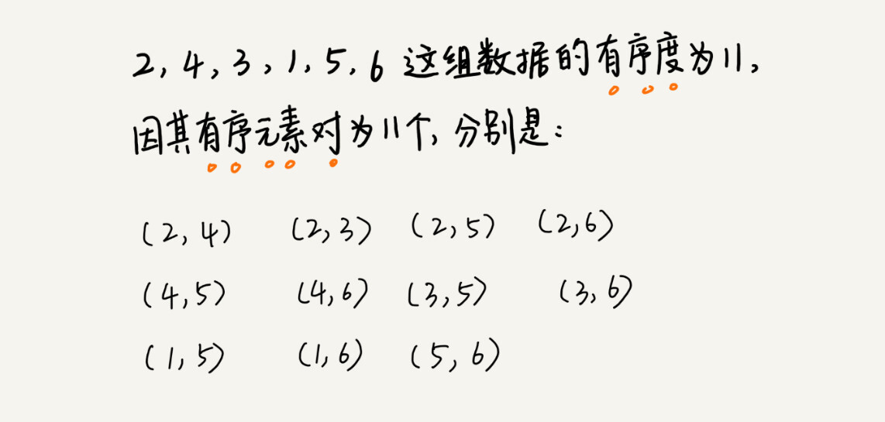

排序学习概要摘记
- 算法执行效率
- 最好情况、最坏情况、平均情况时间复杂度
- 时间复杂度的系数、常数 、低阶
- 比较次数和交换（或移动）次数
-
排序算法 时间复杂度 是否基于比较 是否原地排序 是否稳定排序 冒泡排序 O(n2) 是 是 是 插入排序 O(n2) 是 是 是 选择排序 O(n2) 是 是 否 归并排序 O(nlogn） 是 是 否 快速排序 O(nlogn） 是 是 否 桶排序 O(n) 否 是 否 计数排序 O(n) 否 是 否 基数排序 O(n) 否 是 否 - 原地排序算法，就是特指空间复杂度是 O(1) 的排序算法。
- 排序算法的稳定性，如果待排序的序列中存在值相等的元素，经过排序之后，相等元素之间原有的先后顺序不变。
- 如果现有 10 万条订单数据，希望按照金额从小到大对订单数据排序。对于金额相同的订单，希望按照下单时间从早到晚有序。
- 先按照下单时间给订单排序，不是金额。排序完成之后，用稳定排序算法，按照订单金额重新排序即可得到目标序列。
- 如果现有 10 万条订单数据，希望按照金额从小到大对订单数据排序。对于金额相同的订单，希望按照下单时间从早到晚有序。
- 有序度是数组中具有有序关系的元素对的个数。满足条件：a[i] <= a[j], 且i < j。
- 数组的初始状态是 4，5，6，3，2，1 ，其中有序元素对有 (4，5) (4，6)(5，6)，所以有序度是3 。

- 满有序度就是 n*(n-1)/2，n为元素数量。
- 逆序度的定义正好跟有序度相反（默认从小到大为有序），并且：逆序度 = 满有序度 - 有序度。
- 数组的初始状态是 4，5，6，3，2，1 ，其中有序元素对有 (4，5) (4，6)(5，6)，所以有序度是3 。